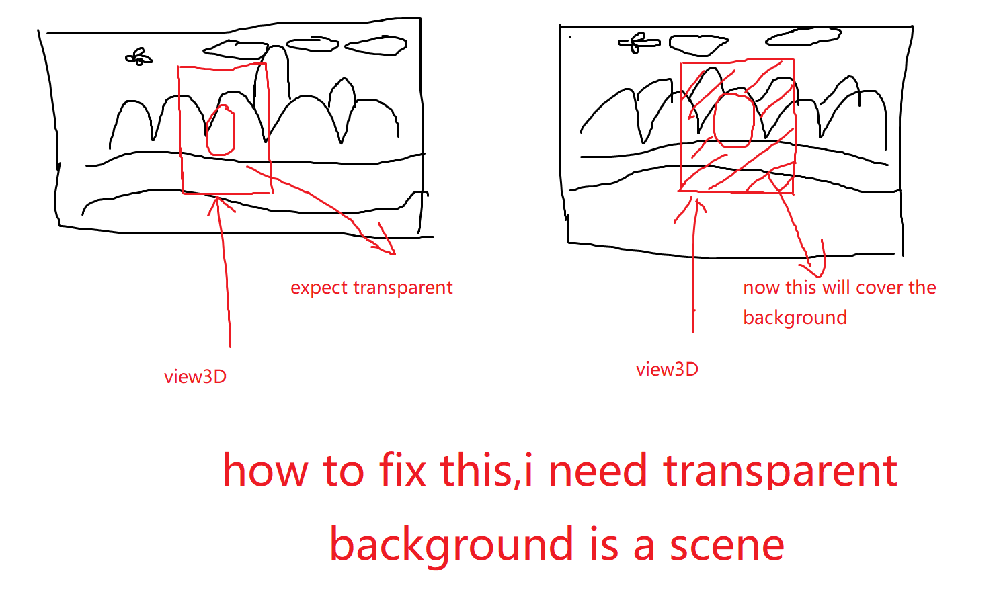
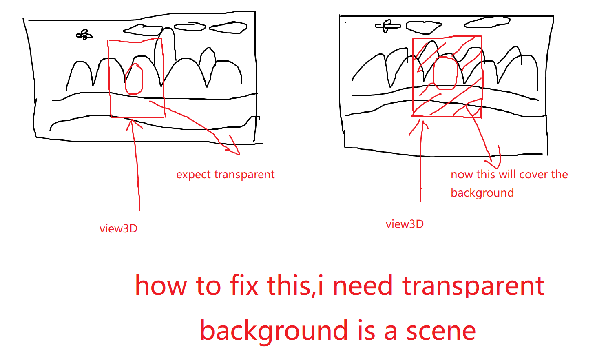

chenjie199234
i want to use a view3d window to do as a hero selector.


i want to use a view3d window to do as a hero selector.


Add my qq 836257514, discuss together.

I think you’d just have to make sure to make the render target have an alpha channel and that the clear and fog colors are transparent as well in that view’s render path. However, I’m not really sure, and haven’t used View3d before.
thx very much.i did what u said,and it worked.the background will be transparent when the fog color set the alpha value to zero.